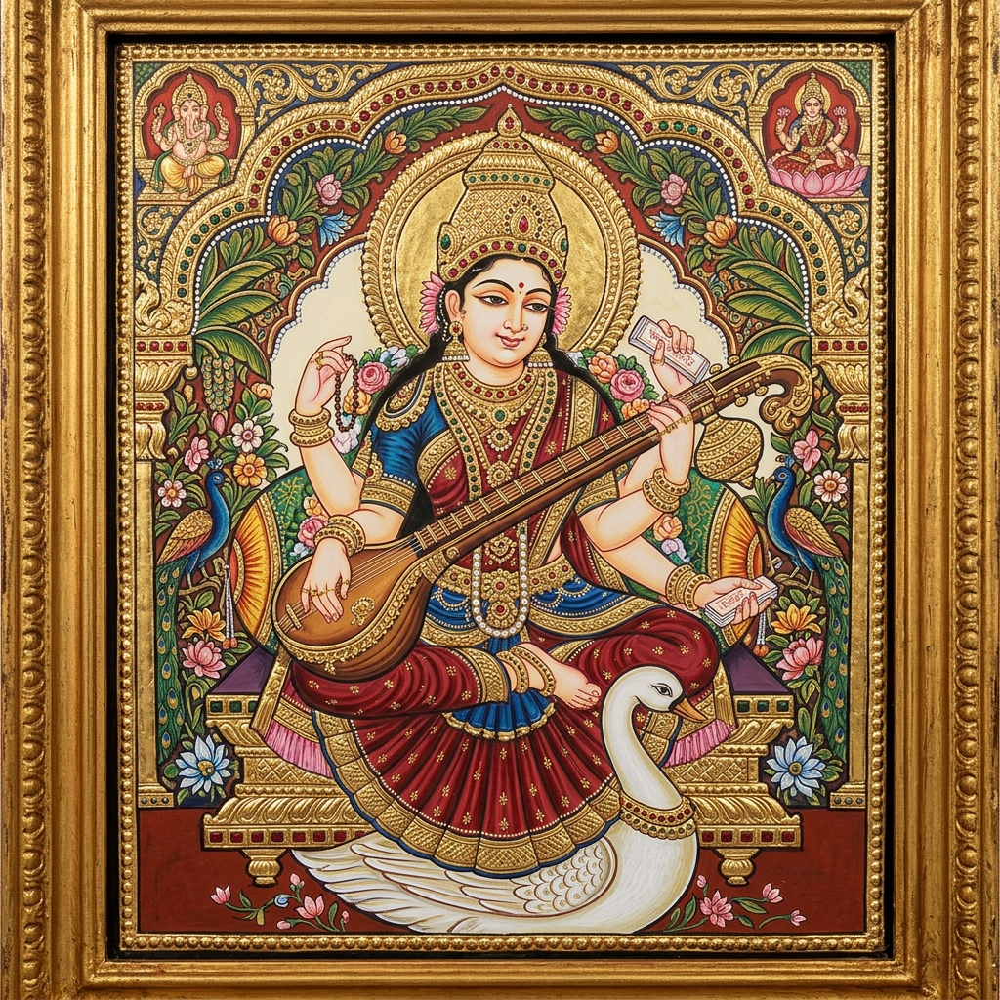

Visual Art
Mysore Painting
A classical South Indian painting style developed during the Vijayanagara Empire and refined under Mysore Wadiyars. Distinctive features include delicate brushwork, use of natural pigments, ivory-smooth gesso ground, and 22-karat gold leaf embossed using a stylus. Themes are primarily Hindu deities — Ganesha, Krishna, Saraswati — rendered in graceful, elongated figures with jewel-like detail.